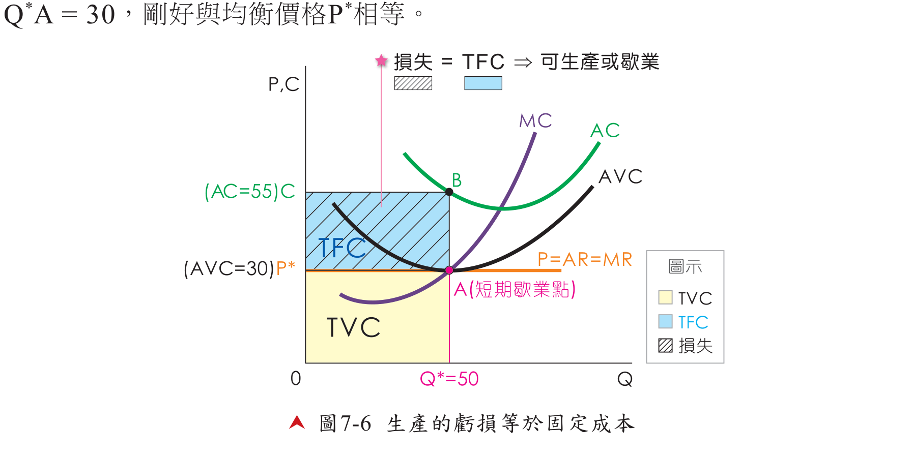
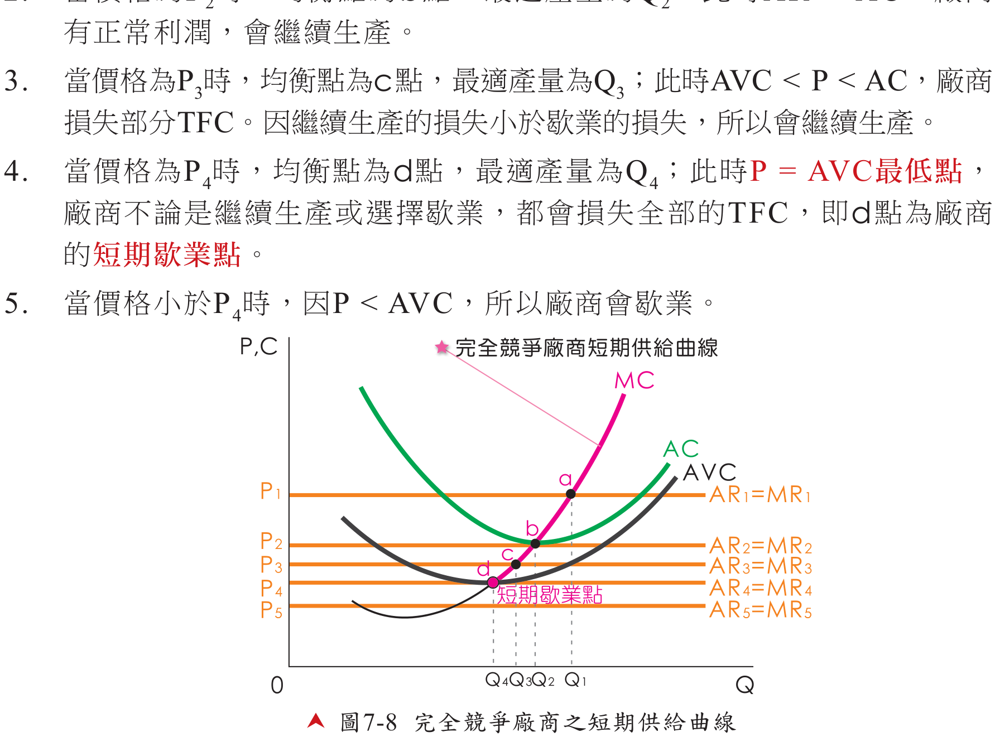
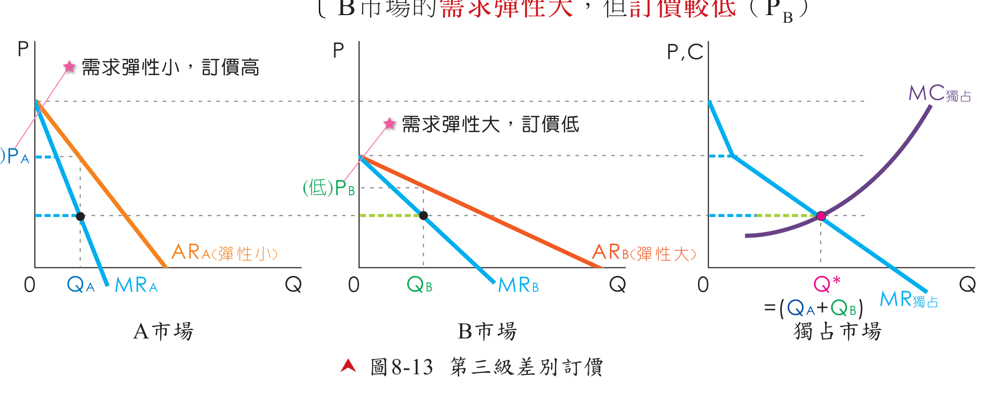
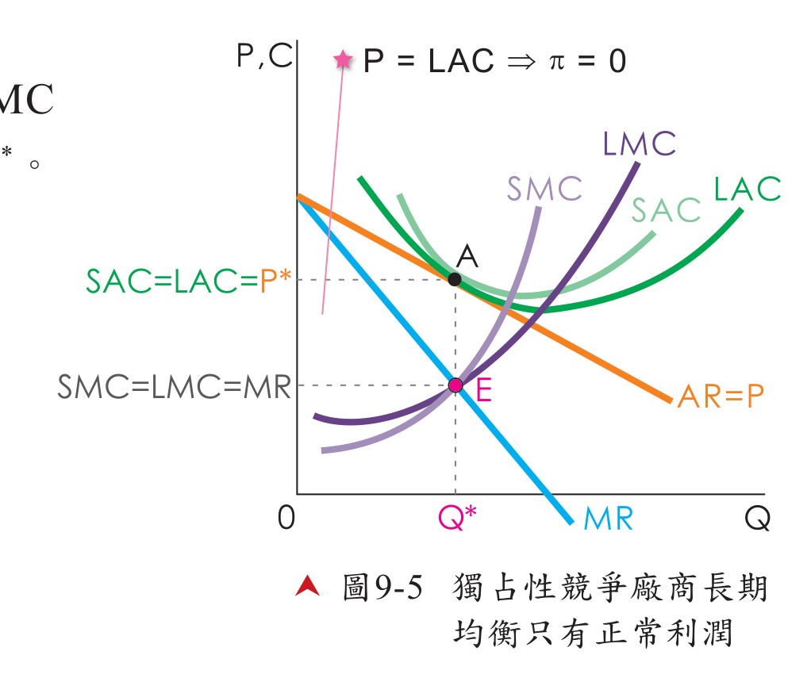

🌟 統測商管群跨章整合核心
🏢 CH6–CH9 廠商理論與市場結構
🎯 追求利潤極大化：π ＝ TR － TC ｜ 通用黃金律：MR ＝ MC
🏛️ CH6 廠商收益原理與市場光譜
📐 市場結構 4 判定指標
● 劃分市場四大維度
- 廠商數：無數 ➔ 眾多 ➔ 少數 ➔ 僅此一家
- 產品特質：完全同質 ➔ 異質品牌 ➔ 無替代品
- 進出難易：完全自由 ➔ 容易 ➔ 困難 ➔ 受阻
- 訂價能力：價格接受者 ➔ 決定者
 圖 6-1 市場結構競爭連續光譜
圖 6-1 市場結構競爭連續光譜
💵 收益三指標與需求線
● 收益三指標 ＆ 兩類需求線
TR ＝ P × Q ｜ AR ＝ P（需求線） ｜ MR ＝ △TR/△Q
- 完全競爭「四線合一」：P ＝ AR ＝ MR ＝ D（水平線，Ed ＝ ∞）
- 不完全競爭「負斜率」：P ＝ AR ＞ MR（MR 斜率為 AR 的 2 倍，橫截距為 一半）
 圖 6-6 不完全競爭 TR、AR、MR 連動
圖 6-6 不完全競爭 TR、AR、MR 連動
🎯 羅賓遜－阿莫羅索公式
● 彈性定價三大連動律
MR ＝ P × ( 1 － 1/|Ed| )
- |Ed| ＞ 1 ➔ MR ＞ 0（降價 TR 增，薄利多銷）
- |Ed| ＝ 1 ➔ MR ＝ 0（TR 達極大頂點）
- |Ed| ＜ 1 ➔ MR ＜ 0（廠商絕不在此階段生產！）
⚖️ CH7 完全競爭產量與價格
價格接受與短期均衡
● 價格接受者（Price Taker）
- 面對水平需求線：P ＝ AR ＝ MR（彈性無限大）
- 短期最佳產量：P ＝ MR ＝ SMC
短期損益 5 大情境
● 5 種損益判別（比較 P 與 SAC, AVC）
- 超額利潤：P ＞ SAC（π ＞ 0）
- 正常利潤（收支平衡）：P ＝ SAC 最低點
- 虧損續營運：AVCmin ＜ P ＜ SAC（虧損 ＜ TFC）
- 短期歇業點：P ＝ AVC 最低點（營業/關廠皆虧 TFC）
- 關廠歇業：P ＜ AVC 最低點（立即停工）

圖 7-6 收支平衡點與歇業點判定
短期供給曲線 S ＝ MC
● SMC 高於 AVC 之區段
- 個別供給線：S ＝ SMC ≧ AVCmin 之路段
- 若 P ＜ AVCmin，供給量 Q ＝ 0
- 市場供給線：個別廠商供給線之「水平加總」

圖 7-8 SMC 導出短期供給線
長期「七位一體」完美均衡
● 自由進出與極致福祉（DWL ＝ 0）
P ＝ MR ＝ LMC ＝ SMC ＝ LACmin ＝ SACmin
- 長期經濟利潤必為零（π ＝ 0 僅享正常利潤）
- 生產效率：在 LAC 最低點生產，產能完全利用
- 配置效率：P ＝ MC，社會總剩餘最大，死重損失 DWL ＝ 0
 圖 7-10 完全競爭長期均衡出清
圖 7-10 完全競爭長期均衡出清
👑 CH8 完全獨占產量與定價
產量決定 ＆ 無供給曲線
● 價格決定者（Price Maker）
- MR ＝ SMC 決定 Q* ➔ 需求線決定 P* ＞ MC
- 獨占沒有供給曲線！（價格與產量無一對一關係）
- 長期超額利潤：高進入障礙使長期仍保有 π ＞ 0
 圖 8-2 獨占利潤極大化超額利潤
圖 8-2 獨占利潤極大化超額利潤
差別訂價（價格歧視）三級制
● 一級、二級、三級取價
- 一級（完全差別）：按保留價索費，CS＝0 全轉為 PS，無 DWL
- 二級（數量折扣）：按數量區間階梯定價（水電費率）
- 三級（市場分割）：彈性大索低價、彈性小索高價
P1( 1 － 1/|Ed1| ) ＝ P2( 1 － 1/|Ed2| ) ＝ MC

圖 8-13 三級差別訂價法則
死重損失 DWL ＆ 自然獨占
● 配置無效率與政府管制
- 配置無效率：P ＞ MC 產生死重損失 DWL 三角形
- 邊際成本定價（P ＝ MC）：福祉最大但廠商虧損，需政府補貼
- 平均成本定價（P ＝ AC）：賺正常利潤無超額利潤，實務次佳解
 圖 8-14 獨占福利死重損失 DWL
圖 8-14 獨占福利死重損失 DWL
☕ CH9 獨占性競爭市場
產品差異 ＆ 非價格競爭
● 特徵與非價格競爭
- 廠商眾多、進出容易、負斜率彈性大
- 產品有差異（異質性），具些微定價力
- 非價格競爭最盛：品牌、包裝、廣告
長期相切均衡 P ＝ LAC
● 自由進出使超額利潤歸零
- 短期均衡：MR ＝ SMC 決定 Q*
- 長期自由進出：超額利潤歸零（P ＝ LAC）

圖 9-5 長期相切切點均衡
超額產能定理（Excess Capacity）
● 切於 LAC 下降段
- 需求線負斜率，相切於 LAC 下降段（最低點左側）
- 實際產量小於最適產能量，產能未完全利用
- 福祉評價：P ＞ MC 有 DWL，但滿足多樣化
🚗 CH9 寡占市場與策略互動
少數大廠 ＆ 相互依存性
● 寡占本質特徵
- 少數幾家大廠掌控市場（同質或異質）
- 決策具有高度相互依存性（牽一髮動全身）
史威吉拗折需求線 ＆ 價格僵固
● 「跟跌不跟漲」心理假設
- 漲價不跟（彈性大平坦） ｜ 跌價跟進（彈性小陡峭）
- MR 垂直斷裂缺口：MC 在缺口內變動時，均衡價格與產量皆維持不變！
 圖 9-6 拗折需求線與價格僵固
圖 9-6 拗折需求線與價格僵固
卡特爾勾結 ＆ 囚犯困境
● 勾結誘惑與賽局均衡
- 卡特爾（如 OPEC）：追求聯合利潤最大，但個別偷產誘因極強，易瓦解
- 價格領導制：優勢大廠領銜定價，小廠跟隨
- 囚犯困境賽局：個別優勢策略（削價促銷）導致奈許均衡，總利潤低於合作解！
🎯 跨章核心決策貫串 ＆ 福利評價鏈
1. 產量黃金律：MR ＝ MC
產量決策通用法則
所有市場追求利潤最大必取 MR ＝ MC，且 MC 斜率 ＞ MR 斜率。
2. 短期去留：看 P 與 AVCmin
短期停業決策法則
P ≧ AVCmin 繼續營業；P ＜ AVCmin 立即歇業關廠！
3. 長期利潤：看進出障礙
超額利潤存續關鍵
自由進出（完競、獨競）π ＝ 0；障礙阻擋（寡占、獨占）長期保有 π ≧ 0。
4. 福利評價：看 P 與 MC
死重損失判定準則
P ＝ MC 福祉最大（DWL ＝ 0）；P ＞ MC 產生死重損失（DWL ＞ 0）。
⚡ 福利對比：完全競爭 P＝MC（無DWL） ⇋ 獨占 P＞MC（死重損失 DWL）
⚡ 長期效率對比：完全競爭 LAC 最低點 ⇋ 獨占性競爭 LAC 下降段（超額產能）
⚡ 彈性定價因果：CH6 MR＝P(1－1/|Ed|) ➔ CH8 三級差別訂價（彈性大價低、彈性小價高）